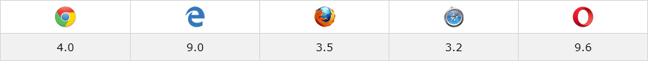

:not 선택자는 이미 지정된 css 스타일에서 특정한 요소를 제외시킬 경우 사용합니다.
일반적으로 선택자는 선택을 하지 않기위해 사용하지만 이 경우는 선택을 하지 않기 위해서 사용합니다.
.CLASS li:not(:nth-child(~)){ CSS }
.CLASS li:not(.classname){ CSS }
.CLASS li:not(.classname1 , classname2){ CSS }
.CLASS input:not([type="password"]){ CSS }
Browser Support
